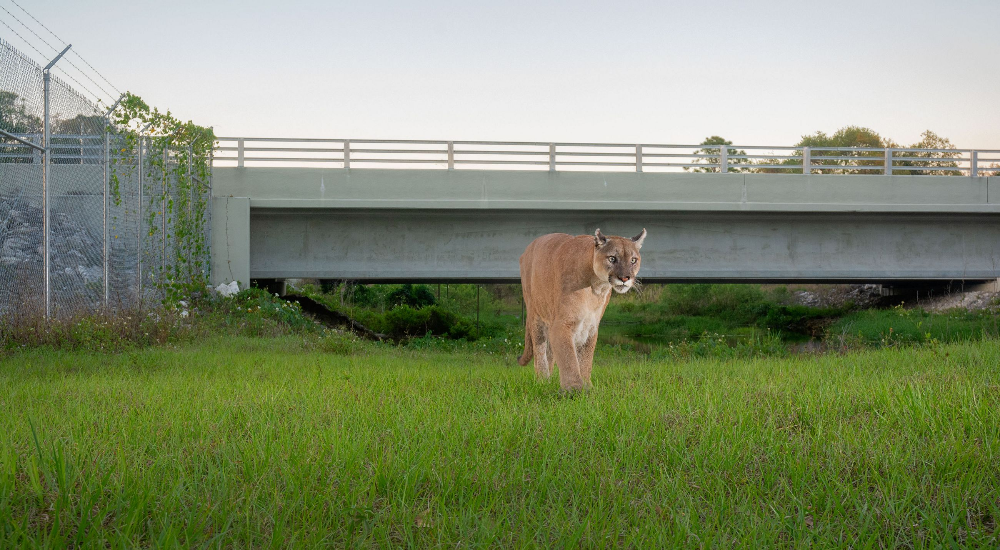
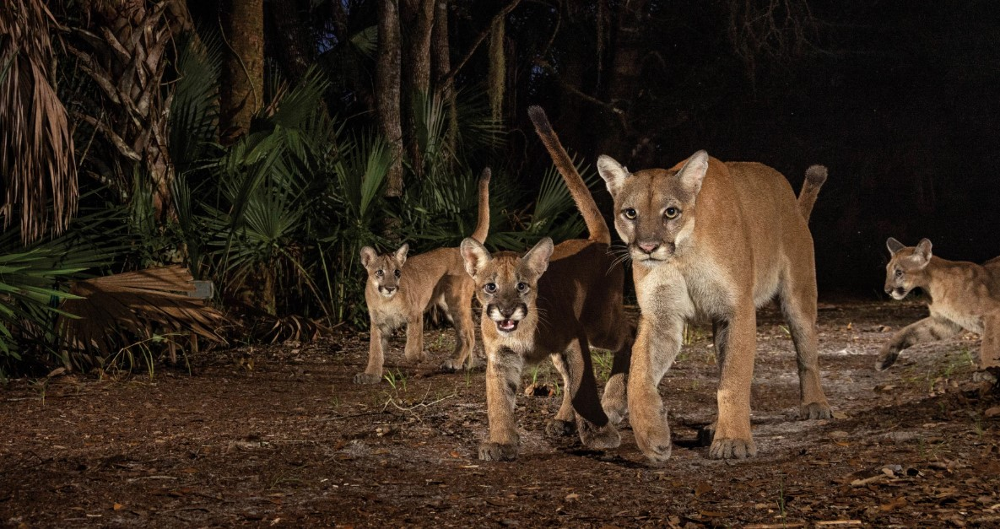

Mapping the Survival
of the Florida Panther
How human development shapes where one of America's most endangered mammals can still survive today.
Photo: National Geographic
How human development shapes where one of America's most endangered mammals can still survive today.
Photo: National Geographic
The Florida panther is one of the most endangered mammals in the United States. Once roaming freely across the entire Southeast, it is now confined mostly to a narrow corridor of South Florida, squeezed between expanding cities, highways, and agricultural land.
Conservation efforts have produced a remarkable turnaround: from fewer than 20 individuals in the 1970s, the population has grown to an estimated 120–230 panthers today. Yet the species remains critically endangered.
"Habitat loss and fragmentation from development and roads remain the primary threats to the Florida panther's recovery."
— Florida Fish & Wildlife Conservation Commission (FWC), Florida Panther Recovery and Management Plan
Vehicle collisions and habitat loss continue to threaten its survival. This story explores the relationship between panther population trends, road mortality, and human pressure, making conservation measurable through data and visualization.

According to the Florida Fish and Wildlife Conservation Commission, a 3-year-old male Florida panther was found dead on March 25, 2026, in Glades County. The suspected cause of death was a vehicle collision, one of the leading threats to this endangered species.
This incident is part of a broader pattern of panther mortality linked to roads and human activity across South Florida. Today, only about 120 to 230 Florida panthers remain in the wild, confined to a fraction of their historic range.
At the same time, environmental groups such as Friends of the Everglades have raised concerns about large-scale developments like "Alligator Alcatraz." They cite expert testimony estimating that up to 2,000 acres of habitat may be impacted by construction and continuous operations, including lighting, traffic, and human presence.
While individual deaths cannot be directly attributed to a single project, scientists and conservation advocates warn that ongoing habitat loss and fragmentation can increase risks for Florida panthers by pushing them closer to roads and developed areas.
With such a small remaining population, every loss underscores the importance of protecting habitat and reducing human-related threats to ensure the species' survival.
Chart 1 — Population
Florida Panther Population, 1970–2023
Source: FWC & U.S. Fish & Wildlife Service
Recovery
In the 1970s, fewer than 20 Florida panthers remained. Decades of hunting, trapping, and habitat loss had pushed the subspecies to the edge. The chart shows just how fragile the population was, and how slow the initial recovery was.
Turning Point
Eight Texas pumas were introduced to restore genetic diversity to an inbred Florida population. Kitten survival rates improved and physical deformities declined sharply. Watch the population curve begin its steeper climb after 1995.
Today
Today an estimated 120–230 panthers roam South Florida. Biologists believe the landscape could support up to 240, but only if sufficient connected habitat remains available.
Road Mortality
Vehicle collisions are the single largest documented cause of Florida panther mortality. Collier County alone accounts for over 100 confirmed deaths since 2000, nearly double any other county.
Hotspots
Lee, Hendry, and Miami-Dade counties follow Collier in mortality counts. These are the corridors where panther habitat intersects most intensely with Florida's road network. Wildlife underpasses on I-75 have helped, but hundreds of miles of road remain unmitigated.
Florida panther females typically produce litters of one to four kittens, averaging between 2.4 and 2.5 per birth, with roughly 70 percent of all litters containing exactly two or three. Births are seasonally concentrated, peaking between March and June when prey availability is highest and conditions most favorable for kitten survival. Females reach reproductive maturity around two years of age and may raise several litters across a lifetime, provided they hold stable territory in an increasingly compressed landscape.
Since the 1995 genetic restoration, when eight Texas cougars were introduced to counteract the effects of inbreeding, and annual population growth has averaged three to four percent. Kitten survival rates improved markedly, and congenital defects associated with inbreeding declined. Yet breeding success alone cannot sustain recovery: vehicle strikes, territorial displacement, and habitat fragmentation continue to remove adults faster than reproduction can replace them. Every litter born is both a measure of progress and a reminder of how much depends on what remains of the panther's world.
Chart 3 - Reproduction
Litter Composition: 70% Contain 2–3 Kittens
Based on FWC telemetry records · Each icon represents one litter in ten
Births peak March–June · Females mature age 2 · Population growth 3–4% annually since 1995 genetic rescue

Conservation is often discussed in emotional terms. This project makes it measurable. The data reveals clear spatial and statistical patterns: panther deaths are not random. They are concentrated where human infrastructure cuts through the last remaining habitat corridors.
Understanding where and why panthers die gives planners, policymakers, and communities the tools to make better decisions about road design, land acquisition, and development approval.
The panther's survival is not only a wildlife question. It is a question about what kind of Florida we are building.
Data sources: Florida Fish and Wildlife Conservation Commission (FWC), U.S. Fish & Wildlife Service, confirmed road mortality reports, panther habitat range GIS shapefiles, U.S. Census population density data, Friends of the Everglades.